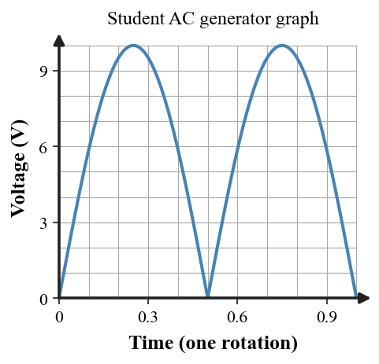

Students will analyze magnetism and electromagnetism by explaining magnetic poles, magnetic fields, magnetic domains, the relationship between electric current and magnetic fields, electromagnets, magnetic forces on moving charges and current-carrying wires, electromagnetic induction, generators, alternating current, and modern electromagnetic systems.
| Rung | I Can Statement | DOK | Level |
|---|---|---|---|
| 8 | I can design, defend, or critique a complete electromagnetic-system model for an unfamiliar real-world technology using fields, forces, current, induction, energy transformations, formulas, and evidence. | DOK 4 | Above |
| 7 | I can compare competing explanations of magnetic fields, electromagnets, magnetic forces, generators, transformers, or electromagnetic devices and justify which explanation better fits the evidence. | DOK 4 | Above |
| 6 | I can connect field diagrams, current diagrams, force diagrams, induction models, formulas, and written scenarios to explain electromagnetic behavior. | DOK 3 | Essential |
| 5 | I can identify and correct misconceptions about magnets, magnetic fields, domains, electromagnets, magnetic forces, induction, generators, or energy in electromagnetic systems. | DOK 3 | Essential |
| 4 | I can calculate magnetic force, magnetic field strength, transformer voltage, or electric power in simple situations and interpret the answer in context. | DOK 2 | Essential |
| 3 | I can interpret magnetic field diagrams, domain diagrams, electromagnet diagrams, magnetic-force diagrams, generator diagrams, and AC graphs. | DOK 2 | Essential |
| 2 | I can define and recognize key terms such as magnetic pole, magnetic field, domain, electromagnet, magnetic force, induction, generator, alternating current, and transformer. | DOK 1 | Essential |
| 1 | I can recognize whether a situation involves magnetic attraction or repulsion, a magnetic field, current-produced magnetism, magnetic force, induction, or electromagnetic technology. | DOK 1 | Essential |
Format: 3–5 minute warm-up, quick check, image prompt, vocabulary check, mini-whiteboard response, card sort, field-diagram labeling, technology sort, or exit ticket
Purpose: Check whether students can recognize basic magnetism and electromagnetism vocabulary, identify magnetic interactions, classify field models, and distinguish magnets, electromagnets, generators, motors, transformers, and induction.
State whether two north magnetic poles attract or repel.
Name the model used to show magnetic-field direction and relative strength around a magnet.
Complete the statement: Small aligned regions inside magnetic materials are called magnetic __________.
A compass deflects next to a current-carrying wire. What connection between electricity and magnetism does this demonstrate?
Name a coil carrying current that acts like a magnet.
Which device primarily converts mechanical energy into electrical energy: motor or generator?
Name the kind of current that repeatedly reverses direction.
Which device changes AC voltage using two coils: electromagnet, transformer, or generator?
Format: Exit ticket, diagram interpretation, short calculation, field model, graph interpretation, ranking task, partner check, data table, or whiteboard response
Purpose: Check whether students can apply simple formulas, interpret field diagrams, compare electromagnet strength, and connect magnetic forces or induction models to physical meaning.
A charge of 3 C moves at 2 m/s perpendicular to a 5 T field. Calculate magnetic force using $F=qvB$ and explain how doubling speed would affect the force in this model.
A 0.30 m wire carries 4 A perpendicular to a 0.50 T field. Calculate $F=BIL$ and explain how increasing wire length affects force.
A wire experiences 9 N of force while carrying 3 A through 1.5 m perpendicular to a field. Calculate $B=\frac{F}{IL}$ and interpret the field-strength value.
A moving charge experiences 8 N while $q=2\text{ C}$ and $v=4\text{ m/s}$ perpendicular to the field. Calculate $B=\frac{F}{qv}$ and explain one assumption in the formula.
A transformer has 120 primary turns and 480 secondary turns. If $V_p=24\text{ V}$, use $\frac{V_s}{V_p}=\frac{N_s}{N_p}$ to find $V_s$ and explain whether it is step-up or step-down.
An ideal transformer receives 80 W. Estimate output power and explain what “ideal” means for energy losses.
A device operates at 18 V and 2.5 A. Calculate electrical power with $P=IV$ and explain how the result connects to energy transfer.
A magnet is moved rapidly into a coil and then slowly into the same coil. Compare the induced voltages and explain the result using rate of magnetic-field change.
Format: Constructed response, misconception analysis, CER, diagram critique, graph explanation, ranking explanation, gallery walk, or group whiteboard defense
Purpose: Check whether students can reason strategically, explain cause and effect, connect multiple representations, and correct common misconceptions about magnetic fields, electromagnets, induction, and electromagnetic systems.
A student says cutting a magnet in half creates a north-only piece and a south-only piece. Critique the statement using magnetic domains and poles.
A student describes magnetic field lines as physical strings. Explain why field lines are a model and what their direction and spacing communicate.
A compass near a wire turns only when current flows. Explain what the observation shows about moving charge and magnetic fields.
A student says an electromagnet works because the copper wire permanently becomes a magnet. Correct the explanation using current, coil shape, and an iron core if present.
A junkyard crane drops scrap when the current is switched off. Explain why removing current changes the magnetic field and lifting force.
A student says a magnetic field always speeds up a moving charged particle. Critique the statement by considering the direction of magnetic force relative to motion.
A student says a generator creates energy from magnetism. Rewrite the explanation using mechanical input, induction, electrical output, and energy conservation.
Compare a motor and a generator. Explain how their energy transformations are related even though the input and output roles are reversed.
Format: Performance task, extended response, investigation reflection, modeling task, critique task, engineering analysis, or strategy defense
Purpose: Check whether students can synthesize magnetic field diagrams, electromagnet models, current diagrams, induction models, force reasoning, energy-transfer models, and real-world evidence in unfamiliar electromagnetic systems.
Design a short investigation that maps the field around a bar magnet with a compass. Include procedure, what you would record, and how the map represents direction and relative strength.
A team wants a stronger electromagnet. Propose three changes to current, coil turns, or core material, and describe data that would let the team compare designs fairly.
A generator design places a stationary coil beside a stationary magnet. Critique the design and describe a revision that would produce induction.
A student says a transformer makes free power when it raises voltage. Evaluate the claim using turn ratio, current, power, and energy conservation.
Compare a speaker and microphone as electromagnetic systems. Describe the role of magnets/coils and explain how their energy transformations are related.
A maglev design reduces contact friction but requires powered electromagnets. Evaluate one benefit and one limitation using magnetic force, energy input, and remaining resistive forces.
The student AC generator graph below stays positive for an entire rotation. Critique the graph and describe what one complete alternating cycle should do.

A product claims powerful permanent magnets can run a flashlight forever. Identify the energy problem in the claim and describe what evidence or energy input would be needed for a physically plausible device.